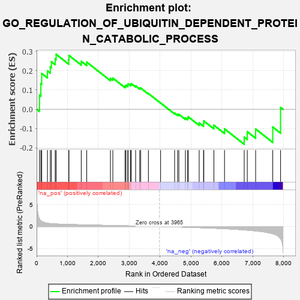
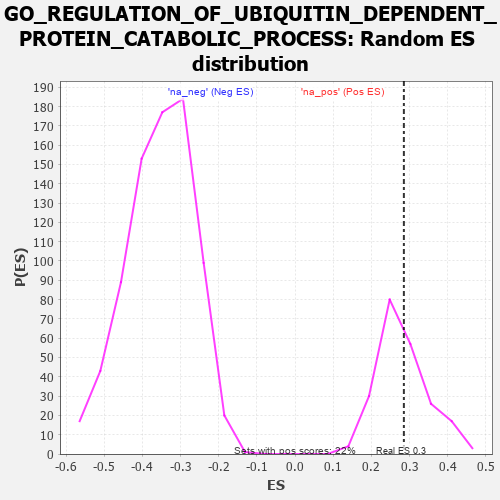

| | | Dataset | 7d |
| Phenotype | NoPhenotypeAvailable |
| Upregulated in class | na_pos |
| GeneSet | GO_REGULATION_OF_UBIQUITIN_DEPENDENT_PROTEIN_CATABOLIC_PROCESS |
| Enrichment Score (ES) | 0.2849834 |
| Normalized Enrichment Score (NES) | 1.0066482 |
| Nominal p-value | 0.42857143 |
| FDR q-value | 0.74265665 |
| FWER p-Value | 1.0 |
Table: GSEA Results Summary

Fig 1: Enrichment plot: GO_REGULATION_OF_UBIQUITIN_DEPENDENT_PROTEIN_CATABOLIC_PROCESS
Profile of the Running ES Score & Positions of GeneSet Members on the Rank Ordered List
| PROBE | GENE SYMBOL | GENE_TITLE | RANK IN GENE LIST | RANK METRIC SCORE | RUNNING ES | CORE ENRICHMENT | | 1 | UBE2K | | | 94 | 1.739 | 0.0729 | Yes |
| 2 | DESI1 | | | 138 | 1.332 | 0.1325 | Yes |
| 3 | AXIN1 | | | 166 | 1.159 | 0.1856 | Yes |
| 4 | GSK3A | | | 351 | 0.745 | 0.1987 | Yes |
| 5 | SUFU | | | 443 | 0.665 | 0.2196 | Yes |
| 6 | CDC20 | | | 480 | 0.644 | 0.2465 | Yes |
| 7 | FBXW8 | | | 601 | 0.594 | 0.2603 | Yes |
| 8 | GLMN | | | 632 | 0.583 | 0.2850 | Yes |
| 9 | AKT1 | | | 1040 | 0.476 | 0.2569 | No |
| 10 | TAF9 | | | 1046 | 0.475 | 0.2794 | No |
| 11 | RBX1 | | | 1445 | 0.401 | 0.2488 | No |
| 12 | N4BP1 | | | 1622 | 0.370 | 0.2446 | No |
| 13 | HIPK2 | | | 2389 | 0.247 | 0.1601 | No |
| 14 | UBXN1 | | | 2467 | 0.232 | 0.1617 | No |
| 15 | UCHL5 | | | 2864 | 0.172 | 0.1202 | No |
| 16 | MTM1 | | | 2893 | 0.168 | 0.1248 | No |
| 17 | SOCS4 | | | 2953 | 0.157 | 0.1250 | No |
| 18 | XPO1 | | | 2960 | 0.156 | 0.1319 | No |
| 19 | UFL1 | | | 3041 | 0.144 | 0.1288 | No |
| 20 | KEAP1 | | | 3063 | 0.141 | 0.1330 | No |
| 21 | FZR1 | | | 3205 | 0.122 | 0.1212 | No |
| 22 | CHFR | | | 3335 | 0.099 | 0.1097 | No |
| 23 | SMAD7 | | | 3369 | 0.093 | 0.1101 | No |
| 24 | WAC | | | 3618 | 0.056 | 0.0816 | No |
| 25 | RNF14 | | | 4013 | -0.010 | 0.0324 | No |
| 26 | LRRK2 | | | 4467 | -0.087 | -0.0204 | No |
| 27 | BAG6 | | | 4563 | -0.108 | -0.0271 | No |
| 28 | NUB1 | | | 4604 | -0.119 | -0.0264 | No |
| 29 | FBXW7 | | | 4816 | -0.161 | -0.0451 | No |
| 30 | CLU | | | 4889 | -0.174 | -0.0457 | No |
| 31 | TLK2 | | | 4909 | -0.179 | -0.0394 | No |
| 32 | PTEN | | | 5262 | -0.261 | -0.0710 | No |
| 33 | SUMO2 | | | 5402 | -0.296 | -0.0741 | No |
| 34 | LATS1 | | | 5412 | -0.298 | -0.0607 | No |
| 35 | PDCL3 | | | 5738 | -0.388 | -0.0828 | No |
| 36 | PLK1 | | | 6082 | -0.500 | -0.1016 | No |
| 37 | GSK3B | | | 6719 | -0.768 | -0.1444 | No |
| 38 | GIPC1 | | | 6819 | -0.826 | -0.1166 | No |
| 39 | BBS7 | | | 7089 | -0.988 | -0.1023 | No |
| 40 | TAF1 | | | 7643 | -1.633 | -0.0924 | No |
| 41 | CAV3 | | | 7896 | -2.739 | 0.0095 | No |
Table: GSEA details [plain text format]

Fig 2: GO_REGULATION_OF_UBIQUITIN_DEPENDENT_PROTEIN_CATABOLIC_PROCESS: Random ES distribution
Gene set null distribution of ES for GO_REGULATION_OF_UBIQUITIN_DEPENDENT_PROTEIN_CATABOLIC_PROCESS